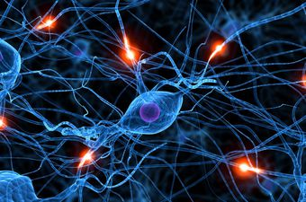
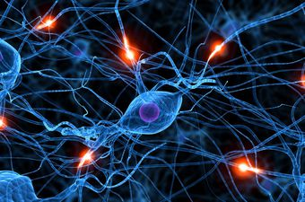

Неуронска мрежа је један облик имплементације система вештачке интелигенције, који представља систем који се састоји од одређеног броја међусобно повезаних процесора или чворова, или процесних елемената које називамо вештачким неуронима.
Тело неурона назива се чвор или јединица. Сваки од неурона има локалну меморију у којој памти податке које обрађује. Подаци који се обрађују су локални подаци као и они који се примају преко везе. Подаци који се овим каналима размењују су обично нумерички.
 
